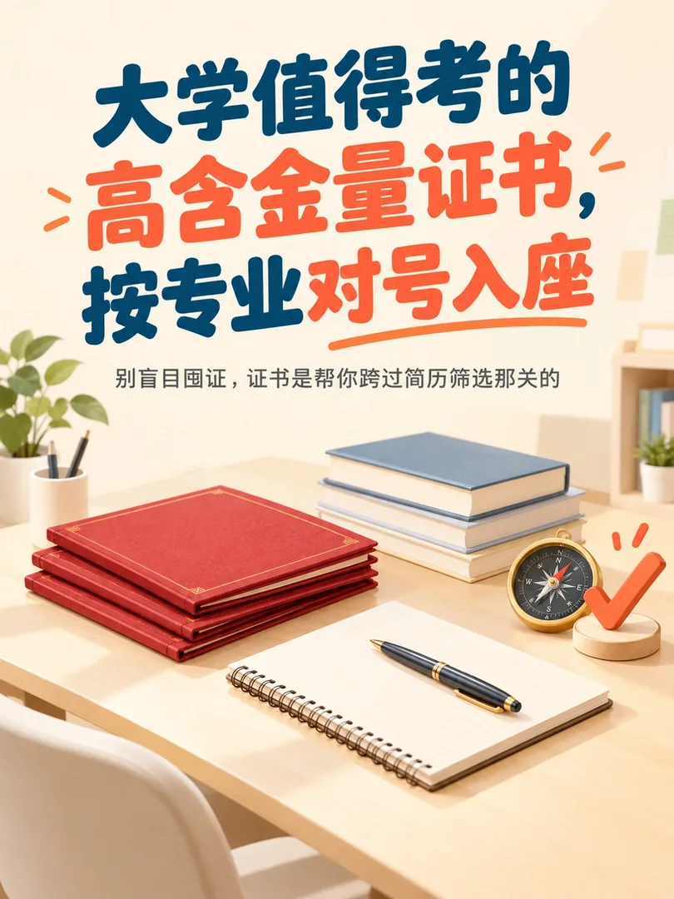

校企合作 OPC 项目组长。带 19 人交付 152 条小红书图文，自研工具链把单条压到 20 分钟。这里放 8 套成品、40 张图与全部正文。
8 套 · 40 张 · 1080×1440 · 全文可展开 · 按色温从暖到冷
不是挂名：学院与企业之间唯一的双向翻译层
人团队 152 条，按垂类与产能配平，产出可交互派工表与选题索引
章 SOP，把企业 12 页规范翻成可执行流程，实测反证修正 3 处误读
个脚本（61 JS + 10 Python），打通 3 套互不相通的客户端
8 套 40 张全过：MD5 逐字节比对 + 尺寸白边脚本化检测
GRASSSII · 16 条原创 · 最高单条 6.2k 播放
不是口号，是每篇都要过一遍的检查